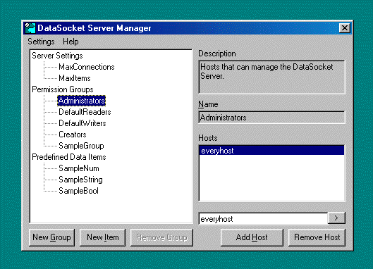
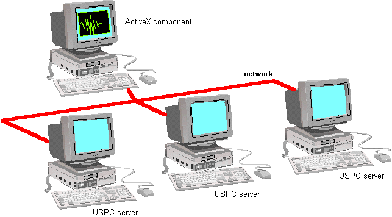
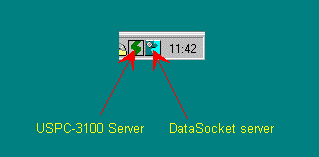
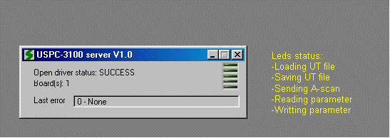
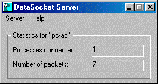

USPC-Server.htm
Version 1.0 24 December 2001
USPC server version 1.0
Installing the USPC server program

1) Run d:\Run-time\LabVIEW Run-Time\lvtreinstall.exe (*)
2) Run D:\USPC-ActiveX\Server\setup.exe and follow
instructions (*)
3) Set permission groups of DataSocket (Start>>National
Instruments>>DataSocket>>DataSocket Server Manager)
Select everyhost permission for
Administrors, DefaultReaders, DefaultWriters and Creators groups.

(ActiveX_DS_manager.gif)
4) Run USPC-3100 Server (Start>>USPC-3100 Server)
This program loads DataSocket server and boots local USPC-3100 boards.
NB: * if D: is your CD-ROM unit.
USPC server description

The USPC server program is useful
when you want control USPC boards by a network with the USPC ActiveX component.
This program receives some
commands messages from USPC ActiveX component and returns data’s.

(ActiveX_Network.gif)
To run USPC server click on Start>>USPC-3100
Server.
This program initializes
local USPC boards and starts DataSocket server.

(ActiveX_DS_manager.gif)
You can show or stop servers
activities by clicking on servers icons.

(ActiveX_Server_show.gif)

(ActiveX_DS_show.gif)
Remark: You can use
DataSocket server for others developments. In this case, you must buy
DataSocket and this documents.
DataSocket
server is a National Instruments program.
Executable that enables data
exchange between multiple applications, each of which uses a DataSocket client.
The server accepts and stores information from data sources and relays it to
other data targets. When you run it on your computer, you make data easily
accessible to other DataSocket applications on the same computer or other
computers connected though a TCP network, such as the Internet.